01Буква · пластика
Flowing T
Пластичная T

Наклонная t с мягким изгибом: устойчивость и свобода движения в одном жесте.
Logo exploration / 01—20
Сила, подвижность и свобода в своём теле.
Двадцать знаков в двух наборах для выбора направления.
Посмотреть все 20 вариантов на сайте и в Instagram →

Пластичная T
Наклонная t с мягким изгибом: устойчивость и свобода движения в одном жесте.
Свободный жест
Раскрытая фигура без спортивной агрессии. Акцент на подвижности и ощущении своего тела.
Инициалы TM
Точная монограмма с общим наклоном. Прямая T отвечает за силу, раскрытая M — за движение.
Орбита движения
Разомкнутая орбита окружает t. Продолжение траектории остаётся открытым.
Упругая M
Непрерывная упругая линия складывается в m: движение без жёстких углов и остановок.
Личное имя
Авторское округлое написание tatsi. Две t задают ритм, мятная точка добавляет лёгкость.
Свободный шаг
Две широкие пластичные формы напоминают шаг и разворот корпуса. Сильный силуэт для одежды.
Точка опоры
Геометричная T с отделённой перекладиной. Наклон задаёт движение, широкие формы — уверенность.
В движении
Компактное написание motion с раскрытой o. Разрыв в букве превращает слово в траекторию.
Лента TM
Мягкая монограмма tm одним росчерком. Петелька t и два подъёма m соединяют личность и движение.

Качание T
Перекладина T — дуга качания, мятная точка отмечает движущийся конец. Покой и амплитуда в одном знаке.

Наклон ti
Лигатура ti (Tatsi / in motion) с наклоном 15°. Точка над i убегает вперёд по линии движения.

Разомкнутое кольцо
Мятное кольцо разомкнуто снизу; белая T выходит через проём наружу. Свобода из замкнутого контура.

Сустав
Шаровой сустав: мятный шар свободно лежит в белой чаше. Подвижность как главный образ, без букв.

Подъём T
Правая половина перекладины поднимается на 15°, как рука. Покой — белый, движение — мятное.
Волна tatsi
Геометрическое написание tatsi из дуг и прямых. Одна мятная волна служит перекладиной обеим t.
Диск с T
Диск разрезан двумя зазорами, и зазоры образуют T. Негативное пространство, читается даже в 16 px.
Лента в кольце
Мятная лента свободно проходит сквозь белое кольцо — тело, в котором есть ход и дыхание.
T на полозе
Белая T стоит на мятной дуге-полозе: устойчивость, готовая качнуться. Спокойный и ясный знак.
Гибкая T
T с гибким позвоночником: прямая белая перекладина и мятная S-образная ножка.